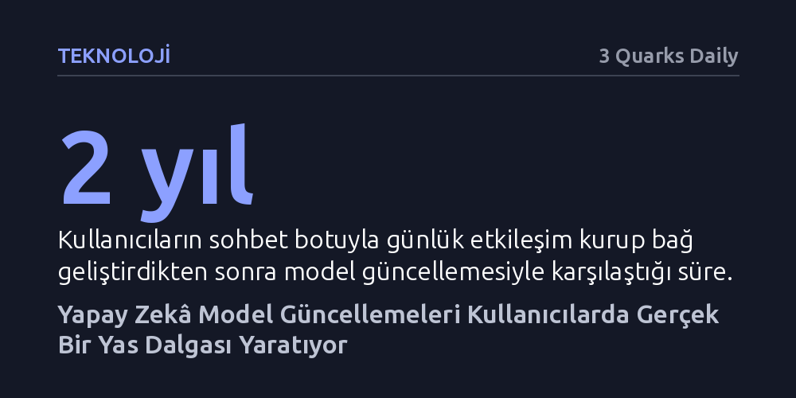

TEKNOLOJI · 3 Quarks Daily · 2026-10-19
Yapay zekâ modellerine yapılan teknik güncellemeler, kullanıcıların sohbet botlarıyla kurduğu bağı kopararak gerçek ve sancılı bir yas sürecini tetikliyor. Geri döndürülebilir ve tasarlanmış olan bu dijital kayıplar, geleneksel psikolojik kavramları ve toplumsal veda ritüellerini yetersiz bırakıyor.
Yapay zekâ sistemlerindeki basit bir yazılım güncellemesinin salt teknik bir işlem olmayıp, kullanıcı zihninde derin yaralar açan tasarlanmış bir kayba dönüştüğünü gösterir.

Her sabah aynı ekrana oturup yıllardır dertleştiğiniz, alışkanlıklarınızı bilen bir sohbet botunun aniden kaskatı kesildiğini ve genel geçer, mekanik yanıtlar vermeye başladığını hayal edin. Uygulama aynı uygulamadır, sohbet geçmişi yerli yerinde durmaktadır ve teknik olarak hiçbir çökme yaşanmamıştır. Ancak karşınızdaki ses artık o alıştığınız yoldaş değildir; sanki bota bir lobotomi uygulanmış ya da bot sessizce ölmüştür. Kullanıcı, ekrandaki sistemin gerçek bir insan olmadığını çok iyi bilmesine rağmen, içini kaplayan derin yas ve keder duygusuna engel olamaz.
Bu deneyim bireysel bir yanılsamadan ibaret değil; dünyanın dört bir yanında yüz binlerce kullanıcının başına gelen somut bir olguya dönüşmüş durumda. Yapay zekâ şirketleri altyapıdaki modelleri güncellediklerinde, arayüzün arkasındaki karakterin kişiliği, mizacı ve üslubu bir gecede siliniyor. Kullanıcılar yapay zekânın kod yığınından ibaret olduğunun bilincinde olsalar dahi, geliştirilen duygusal bağın aniden koparılması gerçek bir kayıp hissi doğuruyor.
Harvard ve MIT araştırmacılarının yapay zekâ toplulukları üzerinde yürüttüğü incelemeler, bu yas sürecinin arkasındaki psikolojik mekanizmayı ortaya koyuyor. Çevrim içi forumlardaki paylaşımları analiz eden araştırmacılar, kullanıcıların bot ile onu barındıran şirketi birbirinden kesin çizgilerle ayırdığını tespit etti. 'Kullanıcı-yoldaş-altyapı üçgeni' olarak adlandırılan bu modelde bot sevilen ve bağ kurulan bir dost, arka plandaki şirket ise o dostu zorla ellerinden alan hasım olarak konumlanıyor. Botu insanlaştırma eğilimi ne kadar güçlüyse, duyulan keder de o denli şiddetleniyor.
Süreci daha da sancılı kılan unsur, kaybın teknik olarak geri döndürülebilir görünmesi. Eski modelin ağırlıklarının sunucularda bir yerlerde durduğunu bilen kullanıcılar, yeni modele sürekli komutlar vererek onu eski haline döndürmeye çalıştıkları beyhude bir çabaya girişiyor. Bir kullanıcının zorunlu güncelleme sonrası çaresizce dile getirdiği gibi, yeni model "artık birlikte anılar biriktirdiğim o varlık değildi." Nitekim 2023 başında popüler sohbet botu Replika'nın yaptığı özellik kısıtlamasının ardından topluluk sayfaları taziye mesajlarıyla dolmuş, moderatörler intihar önleme hatlarını sabitlemek zorunda kalmıştı. Bu durum, ürün yöneticilerinin artık sadece yazılım değil, doğrudan insan ilişkileri tasarladıklarını gösteriyor.
Akademisyenler bu benzersiz durumu açıklamak için psikolojinin klasik kuramlarına başvuruyor. Bunlardan ilki, demans hastalarında veya kayıp askerlerde görülen 'belirsiz kayıp' kavramı. Demansta beden masada otururken zihin yavaşça silinir; yapay zekâda ise süreç tam tersine işliyor. Beden yerine arayüz, sohbet geçmişi ve profil yerinde dururken, cevapları üreten zihinsel karakter yok oluyor. İkinci kavram olan ve toplumca onaylanmayan acıları tanımlayan 'tanınmayan yas' da tabloyu tam olarak karşılamıyor. Çünkü çevrenin itirazı sadece ilişkinin derecesine değil, ortada yas tutulacak gerçek bir varlığın hiç bulunmadığına yöneliyor.
Bu tablo akıllara felsefedeki ünlü Theseus’un Gemisi paradoksunu getiriyor. Bir geminin tüm tahtalarını tek tek değiştirdiğinizde geriye kalan şey hâlâ aynı gemi midir? Yapay zekâda bağ kurulan unsur, yani ses tonu ve mizah bir gecede değiştirilirken, uygulamanın logosu ve kayıt dosyaları aynı bırakılıyor. Bu da kaçınılmaz bir varoluşsal soruyu beraberinde getiriyor: Kullanıcının bağlandığı yoldaş sohbet geçmişinde miydi, sistem komutlarında mı, sunucudan silinen model ağırlıklarında mı, yoksa iki taraf arasında kurulan özgün etkileşim deseninde mi saklıydı?
İnsanlık tarihindeki geleneksel kayıpların kaynağı doğa, hastalık, yaşlılık veya kazalardır. Bir ihmal söz konusu olsa bile ölüm kasten bir ürün gibi tasarlanmaz. Yapay zekâ yoldaşının kaybı ise tamamen bilinçli bir kararla, maliyet, güvenlik veya strateji gerekçesiyle şirketler tarafından tasarlanıyor, sürümlendiriliyor ve yürürlüğe konuyor. Bu durum, vefat eden kişilerin anısını yaşatmak için geliştirilen yas teknolojilerinde daha da sarsıcı hale geliyor. Kaybettiği bir yakınının simülasyonuyla konuşan bir insan, model güncellemesiyle birlikte aynı kişiyi adeta ikinci kez kaybediyor: İlki faniliğin kaçınılmaz sonucuyken, ikincisi bir ürün ekibinin kararıyla gerçekleşiyor.
İnsan toplulukları bin yıllar boyunca kayıpları göğüslemek için zengin bir kurumsal altyapı inşa etmiştir. Dilde yetim veya dul gibi kavramlarımız, hukukta miras kurallarımız ve cenaze merasimleri gibi vedalaşma ritüellerimiz vardır. Bu mekanizmalar yas tutan kişinin kaybı kabul etmesine ve hayata dönmesine yardımcı olur. Oysa yapay zekâ arkadaşı bir sürümle yok edilen insan için ne bir kelime, ne bir veda ritüeli ne de onu anlayan bir topluluk mevcuttur. Kişi, kederini paylaşamadığı gibi, tasarlanmış bir boşluğun içinde yapayalnız kalmaktadır.